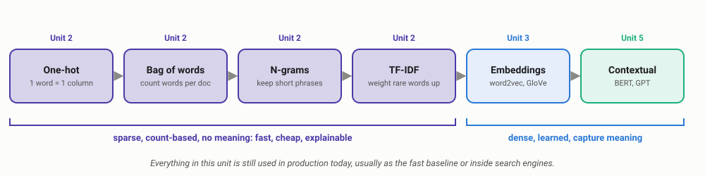
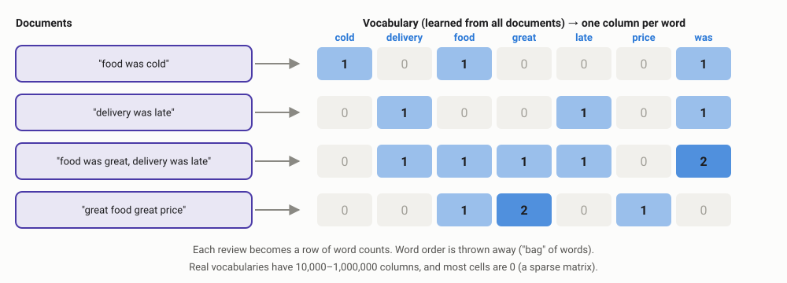
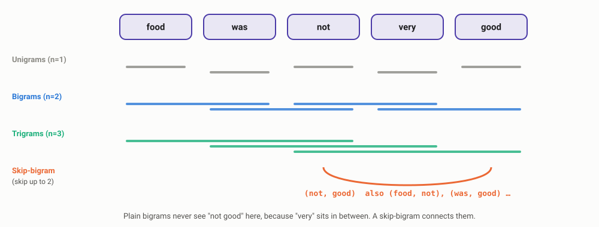
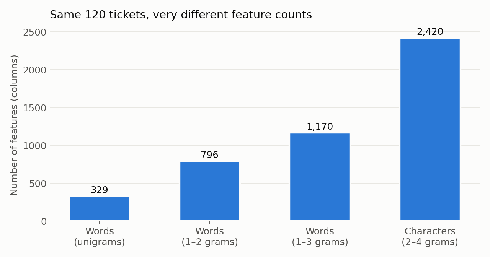
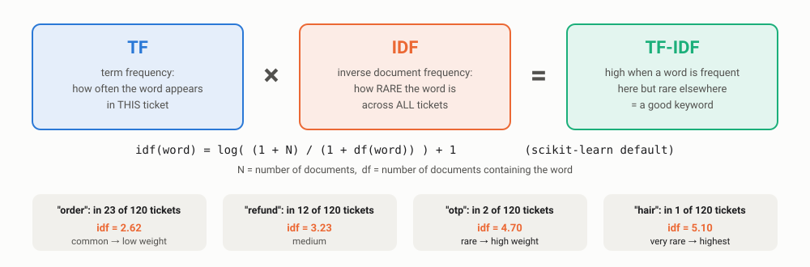
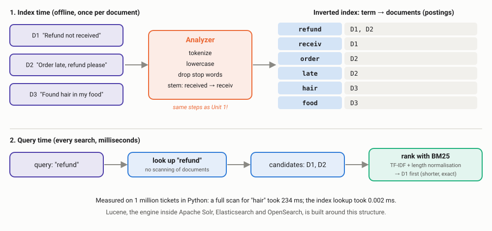
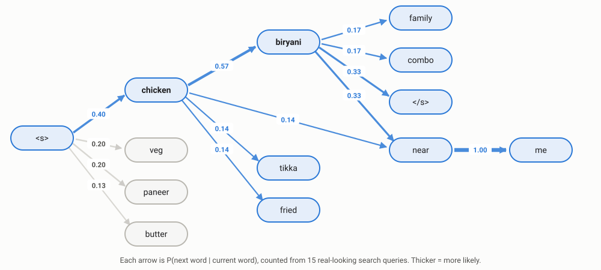
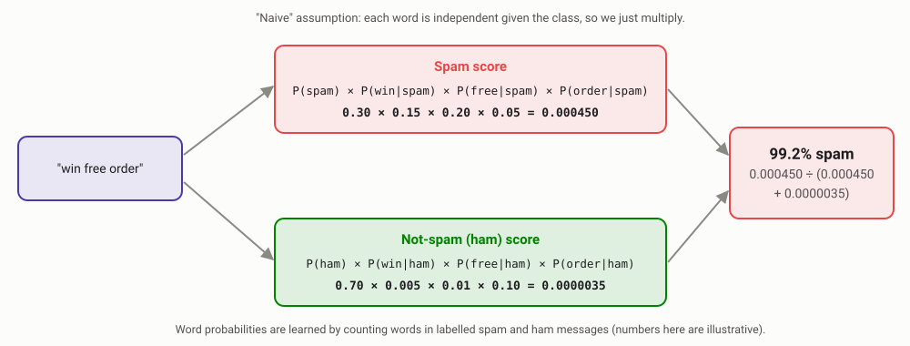
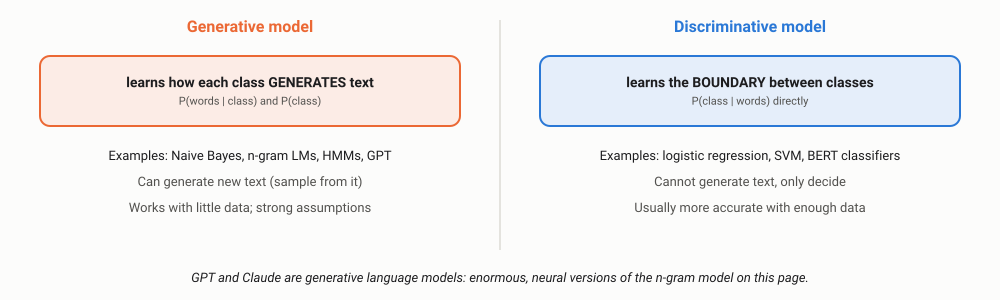

Feature Extraction
How to turn text into numbers a model can learn from, and how to predict the next word. These "classic" techniques still run inside search engines, spam filters and the first version of almost every NLP product.
Every code block on this page needs these libraries. In Google Colab, run this in the first cell:
!pip install scikit-learn pandas numpy nltkOn your own computer, run the same commands in a terminal without the leading !. Data: support_tickets.csv — upload it to Colab (folder icon on the left) or keep it next to your script.
00Why feature extraction?
Machine learning models only understand numbers. Feature extraction is the step that turns "order late tha, refund chahiye" into a vector of numbers. The choice of features decides what the model can possibly learn: if a feature cannot tell "not good" from "good", no model on top of it can either.

We continue with the food-delivery app from Unit 1. This time we have 120 labelled support tickets in four queues: refund_payment, delivery_delay, food_quality and account_app. The data is synthetic but written to look real, with Hinglish and typos. Download support_tickets.csv to run every example on this page.
Everything in this unit predates deep learning, and all of it is still in production. Elasticsearch and OpenSearch rank search results with BM25, a descendant of TF-IDF. Spam filters still use Naive Bayes. And when a team starts a new text-classification project, the first model is very often TF-IDF + logistic regression, because it trains in seconds, runs in under a millisecond and explains its decisions.
01One-hot encoding
The simplest representation: give every possible value its own column, put a 1 in the matching column and 0 everywhere else.
from sklearn.preprocessing import OneHotEncoder
import numpy as np
# 1) Categorical features: the most common use of one-hot in industry
cities = np.array([["Pune"], ["Mumbai"], ["Pune"], ["Delhi"]])
enc = OneHotEncoder(handle_unknown="ignore").fit(cities)
print(enc.categories_[0])
print(enc.transform(cities).toarray())
print("unseen city ->", enc.transform([["Nagpur"]]).toarray()) # all zeros, no crash
# 2) Words: one column per vocabulary word
vocab = ["cold", "delivery", "food", "late", "refund"]
one_hot = {w: np.eye(len(vocab), dtype=int)[i] for i, w in enumerate(vocab)}
print("food ->", one_hot["food"])
print("food · refund =", one_hot["food"] @ one_hot["refund"])['Delhi' 'Mumbai' 'Pune'] [[0. 0. 1.] [0. 1. 0.] [0. 0. 1.] [1. 0. 0.]] unseen city -> [[0. 0. 0.]] food -> [0 0 1 0 0] food · refund = 0
What this shows
- Great for categories: city, cuisine, payment method, app version. Every tabular ML model in industry uses one-hot (or a close cousin) for columns like these.
- Unseen values:
handle_unknown="ignore"turns a new city into all zeros instead of crashing the production service. Always set this. - Poor for words: the dot product of any two different words is 0, so "food" is as unrelated to "meal" as it is to "refund". And a real vocabulary means 50,000+ columns per word.
You will still meet one-hot text every day, just in disguise: the label of a classifier is one-hot ([0, 1, 0, 0] = delivery_delay), and the very first layer of every neural language model is a lookup keyed by a one-hot token ID.
02Bag of words (CountVectorizer)
A bag of words (BoW) represents a whole document by counting how many times each vocabulary word appears in it. Word order is thrown away, as if the words were shaken in a bag.

from sklearn.feature_extraction.text import CountVectorizer
reviews = [
"food was cold",
"delivery was late",
"food was great, delivery was late",
"great food great price",
]
vec = CountVectorizer()
X = vec.fit_transform(reviews)
print(vec.get_feature_names_out())
print(X.toarray())['cold' 'delivery' 'food' 'great' 'late' 'price' 'was'] [[1 0 1 0 0 0 1] [0 1 0 0 1 0 1] [0 1 1 1 1 0 2] [0 0 1 2 0 1 0]]
Notice that X is a sparse matrix: scikit-learn only stores the non-zero cells. On our 120 tickets, only about 1.5% of the cells are non-zero. On millions of documents, sparse storage is the difference between megabytes and terabytes.
Bag of words cannot tell these two reviews apart:
from sklearn.feature_extraction.text import CountVectorizer
a, b = "not good, very bad", "very good, not bad"
uni = CountVectorizer().fit([a, b])
print("unigrams :", (uni.transform([a]) != uni.transform([b])).nnz == 0) # identical vectors?
bi = CountVectorizer(ngram_range=(1, 2)).fit([a, b])
print("+bigrams :", (bi.transform([a]) != bi.transform([b])).nnz == 0)
print(bi.get_feature_names_out())unigrams : True +bigrams : False ['bad' 'good' 'good not' 'good very' 'not' 'not bad' 'not good' 'very' 'very bad' 'very good']
With single words, a complaint and a compliment get exactly the same vector. Adding bigrams ("not good", "very bad") fixes it. That is the motivation for the next section.
BoW is behind topic dashboards ("top words in 1-star reviews this week"), simple document similarity, deduplication of near-identical tickets, and it is the input to classic topic models like LDA, still used to explore large collections of feedback.
03N-grams as features
An n-gram is a sequence of n consecutive tokens. Using n-grams as features brings back a little word order: "not good" becomes its own column.

The price is feature explosion. Here is what happens to our 120 tickets:
import pandas as pd
from sklearn.feature_extraction.text import CountVectorizer
df = pd.read_csv("support_tickets.csv")
for name, vec in {
"words (1)": CountVectorizer(ngram_range=(1, 1)),
"words (1-2)": CountVectorizer(ngram_range=(1, 2)),
"words (1-3)": CountVectorizer(ngram_range=(1, 3)),
"chars (2-4)": CountVectorizer(analyzer="char_wb", ngram_range=(2, 4)),
}.items():
X = vec.fit_transform(df["text"])
print(f"{name:<12} features={X.shape[1]:>5} non-zero={X.nnz / (X.shape[0]*X.shape[1]):.1%}")words (1) features= 329 non-zero=1.5% words (1-2) features= 796 non-zero=1.2% words (1-3) features= 1170 non-zero=1.1% chars (2-4) features= 2420 non-zero=2.9%

min_df and max_features.Character n-grams: the typo and Hinglish fix
Instead of word sequences, character n-grams split each word into overlapping pieces: "delivery" → "de", "el", "li", "iv"… Misspelled words still share most of their pieces:
from sklearn.feature_extraction.text import CountVectorizer
from sklearn.metrics.pairwise import cosine_similarity
words = ["delivery", "delivry", "dilevery", "refund"]
for name, vec in {"word-level": CountVectorizer(),
"char 2-3": CountVectorizer(analyzer="char_wb", ngram_range=(2, 3))}.items():
X = vec.fit_transform(words)
sims = [float(v) for v in cosine_similarity(X[0], X).round(2)[0]]
print(f"{name:<10}", dict(zip(words, sims)))word-level {'delivery': 1.0, 'delivry': 0.0, 'dilevery': 0.0, 'refund': 0.0}
char 2-3 {'delivery': 1.0, 'delivry': 0.75, 'dilevery': 0.47, 'refund': 0.0}
At word level, "delivry" is a completely different word. With character n-grams it is 75% similar to "delivery", while "refund" stays at 0.
Character n-grams are used for language identification (a classic technique since the 1990s), for spam that hides words ("fr33 m0ney", "v.i.a.g.r.a"), for product search that must survive typos, and for code-mixed text like Hinglish where spellings are not standardised ("bahut", "bohot", "bahot").
04Skip-grams
A skip-gram is an n-gram that is allowed to skip over words. A "2-skip-bigram" pairs each word with any of the next three words. This catches relationships that ordinary bigrams miss when a word sits in between.
from nltk.util import ngrams, skipgrams
tokens = "food was not very good".split()
print("bigrams :", list(ngrams(tokens, 2)))
print("2-skip-bigrams:", list(skipgrams(tokens, 2, 2)))bigrams : [('food', 'was'), ('was', 'not'), ('not', 'very'), ('very', 'good')]
2-skip-bigrams: [('food', 'was'), ('food', 'not'), ('food', 'very'), ('was', 'not'), ('was', 'very'), ('was', 'good'), ('not', 'very'), ('not', 'good'), ('very', 'good')]
Plain bigrams never produce ('not', 'good') here because "very" is in the way. The skip-bigram does. The cost: 9 features instead of 4, and many pairs are noise (('was', 'very')).
Skip-grams matter less today as hand-made features, but the idea became hugely important: word2vec's skip-gram model (Unit 3) is trained on exactly these (word, nearby word) pairs, and that is how it learns that "biryani" and "pulao" mean similar things. Keep this picture in mind for the next unit.
05TF-IDF: weighting words by importance
Raw counts treat every word equally, so common words like "order" or "was" dominate. TF-IDF fixes this: a word gets a high score if it is frequent in this document but rare across all documents.

import pandas as pd
from sklearn.feature_extraction.text import TfidfVectorizer
df = pd.read_csv("support_tickets.csv")
tfidf = TfidfVectorizer()
X = tfidf.fit_transform(df["text"])
idf = pd.Series(tfidf.idf_, index=tfidf.get_feature_names_out())
for w in ["not", "order", "refund", "rider", "otp", "hair"]:
print(f"{w:<7} appears in {int((X[:, tfidf.vocabulary_[w]] > 0).sum()):>2} tickets idf = {idf[w]:.2f}")not appears in 22 tickets idf = 2.66 order appears in 23 tickets idf = 2.62 refund appears in 12 tickets idf = 3.23 rider appears in 5 tickets idf = 4.00 otp appears in 2 tickets idf = 4.70 hair appears in 1 tickets idf = 5.10
"hair" appears once, so when it does appear it is a very strong signal (a food-safety complaint). "order" appears everywhere, so it tells us little.
Keyword extraction: what is each team hearing about?
Treat all tickets of one queue as a single document, and TF-IDF gives the words that are characteristic of that queue:
import pandas as pd
from sklearn.feature_extraction.text import TfidfVectorizer
df = pd.read_csv("support_tickets.csv")
# one "document" per category: which words are most characteristic of each team's tickets?
docs = df.groupby("label")["text"].apply(" ".join)
tfidf = TfidfVectorizer(stop_words="english")
X = tfidf.fit_transform(docs)
words = tfidf.get_feature_names_out()
for label, row in zip(docs.index, X.toarray()):
top = row.argsort()[::-1][:6]
print(f"{label:<15}", ", ".join(words[top]))account_app app, account, unable, raha, working, otp delivery_delay delivery, order, late, rider, time, min food_quality food, cold, stale, like, veg, curry refund_payment refund, charged, payment, money, order, days
Notice "raha" (Hindi, as in "chal raha hai") shows up for app issues. TF-IDF does not care about language; it only counts.
- Search engines: Elasticsearch, OpenSearch and Solr rank results with BM25, an improved TF-IDF that also accounts for document length and stops rewarding a word after a few repeats.
- RAG chatbots: modern "hybrid search" combines BM25 keyword matching with embedding search, because keywords still win on exact matches like order IDs, product codes and error messages.
- Auto-tagging: the top TF-IDF terms of an article or product description become its tags.
06Indexing: how search engines make TF-IDF fast
TF-IDF tells us how to score a document for a query. But a real search box has millions of documents and must answer in milliseconds. Scoring every document for every query is far too slow. The solution, used by every search engine, is an index.
Why we need an index
Think of the index at the back of a textbook. To find "backpropagation" you do not read all 600 pages; you look up the word and jump to pages 212 and 348. A search engine does the same thing for every word in every document. Here is the difference on 1 million tickets:
import time, random
from collections import defaultdict
import pandas as pd
base = pd.read_csv("support_tickets.csv")["text"].tolist()
docs = [random.Random(i).choice(base) + f" ticket{i}" for i in range(1_000_000)] # 1 million tickets
t = time.perf_counter()
hits = [i for i, d in enumerate(docs) if "hair" in d.split()] # no index: read every document
scan_ms = (time.perf_counter() - t) * 1000
index = defaultdict(list) # built once, offline
for i, d in enumerate(docs):
for term in set(d.split()):
index[term].append(i)
t = time.perf_counter()
hits2 = index["hair"] # with index: one lookup
index_ms = (time.perf_counter() - t) * 1000
print(f"{len(hits):,} matches | full scan: {scan_ms:,.0f} ms | inverted index: {index_ms:.3f} ms")8,280 matches | full scan: 234 ms | inverted index: 0.002 ms
A quarter of a second per query sounds fine until you have 1,000 users searching at once, or 1 billion documents instead of 1 million. With the index, the lookup cost barely grows with the number of documents. The one-time cost moves to index time, when documents are added.
The inverted index
It is called "inverted" because instead of storing document → words, it stores word → documents. Each list of documents is called a postings list, and it also stores how often the word appears (the TF in TF-IDF).

Build a mini search engine: inverted index + BM25
This is, in miniature, what Elasticsearch does. BM25 is TF-IDF with two practical fixes: a word repeated 10 times is not 10 times more relevant (k1 caps it), and long documents should not win just because they contain more words (b normalises for length).
import math, re
from collections import defaultdict, Counter
import pandas as pd
docs = pd.read_csv("support_tickets.csv")["text"].tolist()
def analyze(text): # the "analyzer": tokenize + lowercase (+ stemming in real engines)
return re.findall(r"[a-z0-9]+", text.lower())
# Build the inverted index: term -> {doc_id: term frequency}
index = defaultdict(dict)
doc_len = []
for doc_id, text in enumerate(docs):
tokens = analyze(text)
doc_len.append(len(tokens))
for term, tf in Counter(tokens).items():
index[term][doc_id] = tf
print("terms in index:", len(index))
print("postings for 'refund':", index["refund"])
# BM25 scoring (k1 and b are the usual defaults, also used by Elasticsearch)
N, avgdl, k1, b = len(docs), sum(doc_len) / len(docs), 1.2, 0.75
def bm25_search(query, top_k=3):
scores = defaultdict(float)
for term in analyze(query):
postings = index.get(term, {}) # only look at documents containing the term
idf = math.log(1 + (N - len(postings) + 0.5) / (len(postings) + 0.5))
for doc_id, tf in postings.items():
scores[doc_id] += idf * tf * (k1 + 1) / (tf + k1 * (1 - b + b * doc_len[doc_id] / avgdl))
return sorted(scores.items(), key=lambda x: -x[1])[:top_k]
for doc_id, score in bm25_search("refund not received"):
print(f"{score:5.2f} {docs[doc_id]}")terms in index: 333
postings for 'refund': {4: 1, 9: 1, 10: 1, 15: 1, 18: 1, 22: 1, 36: 1, 71: 1, 81: 1, 83: 1, 93: 1, 114: 1}
7.96 refund to source not received
7.37 refund not received yet for order
4.02 bank says refund not initiated
Only the 12 tickets in the "refund" postings list (plus those containing "not" or "received") are scored; the other 100+ are never touched.
Apache Lucene, Solr, Elasticsearch and OpenSearch
Nobody builds a production search engine from scratch. The industry runs on one open-source library and the servers built on top of it:
| Tool | What it is | Typically used for |
|---|---|---|
| Apache Lucene | The Java library that implements the inverted index, analyzers and BM25 scoring. Started by Doug Cutting in 1999. | The engine inside all three tools below |
| Apache Solr | A search server built on Lucene, with configuration files, faceting and a mature plugin ecosystem. | Enterprise search, e-commerce catalogues, digital libraries |
| Elasticsearch | A distributed search and analytics engine on Lucene, driven by a JSON/REST API. Created in 2010, now developed by Elastic. | Product and site search, log analytics (the "ELK" stack), observability |
| OpenSearch | A community fork of Elasticsearch started by AWS in 2021, under the Apache 2.0 licence. | Same use cases; the default choice on AWS |
This is what our ticket search looks like in Elasticsearch. You define how text is analyzed, add documents, and query; the index and BM25 are handled for you:
# 1) Create an index; the "english" analyzer tokenizes, lowercases, removes stop words and stems
PUT /tickets
{
"mappings": {
"properties": {
"text": { "type": "text", "analyzer": "english" },
"label": { "type": "keyword" }
}
}
}
# 2) Add a document
POST /tickets/_doc
{ "text": "refund not received yet for order", "label": "refund_payment" }
# 3) Search: ranked by BM25 by default
GET /tickets/_search
{
"query": { "match": { "text": "refunds not received" } }
}Request syntax as used in Kibana Dev Tools. Note that the query says "refunds" and the document says "refund": the english analyzer stems both to the same term, so it still matches.
- Product search on e-commerce and food apps, with filters (veg only, rating 4+) and facets (cuisine counts).
- Autocomplete, using special indexes of word prefixes ("bir" → "biryani").
- Log search: engineers search billions of log lines for an error message in seconds.
- Support knowledge bases and help-centre search.
- RAG chatbots: BM25 retrieval over company documents, usually combined with vector search.
- Analyzer mismatch: if documents are stemmed at index time but queries are not (or vice versa), "refunds" never finds "refund". Index and query must use compatible analyzers.
- Changing the analyzer means reindexing every document. On a billion documents, that is a planned migration, not a config tweak.
- Words, not meaning: a search for "money back" will never find "refund not received" unless someone adds a synonym list. That limitation leads directly to vector indexes for embeddings (FAISS, HNSW, and the vector search built into Elasticsearch and OpenSearch), covered in Unit 3.
- Hinglish: built-in analyzers exist for English and Hindi, but code-mixed Roman-script Hindi needs custom analyzers and synonym lists.
07Case study: a support-ticket router in 15 lines
Let's build the thing a real team would build first: a classifier that reads a ticket and picks the queue.
import pandas as pd
from sklearn.model_selection import train_test_split
from sklearn.pipeline import make_pipeline
from sklearn.feature_extraction.text import TfidfVectorizer
from sklearn.linear_model import LogisticRegression
from sklearn.metrics import classification_report
df = pd.read_csv("support_tickets.csv")
X_train, X_test, y_train, y_test = train_test_split(
df["text"], df["label"], test_size=0.25, stratify=df["label"], random_state=42)
model = make_pipeline(
TfidfVectorizer(ngram_range=(1, 2), sublinear_tf=True),
LogisticRegression(max_iter=1000),
)
model.fit(X_train, y_train) # the vectorizer learns its vocabulary from TRAIN only
print(classification_report(y_test, model.predict(X_test), digits=2))
new = ["paisa wapas kab milega", "rider is not answering", "the gulab jamun was stale",
"otp not received", "my order is late and I want a refund"]
for text, label, p in zip(new, model.predict(new), model.predict_proba(new).max(axis=1)):
print(f"{text:<40} -> {label:<15} ({p:.2f})") precision recall f1-score support
account_app 1.00 0.62 0.77 8
delivery_delay 0.64 1.00 0.78 7
food_quality 1.00 0.88 0.93 8
refund_payment 0.71 0.71 0.71 7
accuracy 0.80 30
macro avg 0.84 0.80 0.80 30
weighted avg 0.85 0.80 0.80 30
paisa wapas kab milega -> account_app (0.25)
rider is not answering -> delivery_delay (0.47)
the gulab jamun was stale -> food_quality (0.55)
otp not received -> account_app (0.31)
my order is late and I want a refund -> delivery_delay (0.39)
Reading the results like an engineer
- 80% accuracy from 90 training tickets in under a second of training. That is the baseline any fancier model must beat.
- "paisa wapas kab milega" ("when will I get my money back") went to the wrong queue. None of its words appear in the training data, so the model is guessing, and its confidence (0.25, about the same as a random pick among 4 queues) says so.
- Use the confidence. In production, predictions below a threshold (say 0.5) go to a human or a general queue instead of being auto-routed.
- "late and I want a refund" is really two problems. Real ticket routers are often multi-label.
Explainability: why did it decide that?
A linear model over TF-IDF features is fully transparent. We can list the words that push a ticket into each queue:
# continuing from the block above
vec, clf = model.named_steps["tfidfvectorizer"], model.named_steps["logisticregression"]
names = vec.get_feature_names_out()
for label, coefs in zip(clf.classes_, clf.coef_):
print(f"{label:<15}", ", ".join(names[coefs.argsort()[::-1][:6]]))account_app app, cannot, account, unable, unable to, otp delivery_delay delivery, rider, is, order, late, waiting food_quality was, were, food, and, burnt, stale refund_payment refund, charged, payment, money, for, fee
Look at food_quality: its strongest signals are "was" and "were". Food complaints in our data are written in the past tense ("food was cold"), while delivery complaints are in the present ("rider is not moving"). The model learned grammar, not food. We checked: the model sends "the delivery was late" to food_quality (0.36) instead of delivery_delay (0.33). This kind of spurious correlation is extremely common, and only explainability plus error analysis catches it.
Which features and which model?
Five-fold cross-validation on all 120 tickets, plus the time to classify one ticket on a laptop CPU:
BoW + Naive Bayes accuracy=0.73 latency=0.20 ms/ticket TF-IDF + LogReg accuracy=0.73 latency=0.34 ms/ticket char TF-IDF + LogReg accuracy=0.81 latency=0.43 ms/ticket
Character n-grams win on this messy, Hinglish, typo-filled data. All three answer in well under a millisecond, so one ordinary server can classify thousands of tickets per second, with no GPU.
With only 120 examples these numbers are noisy; real projects use thousands of tickets. But the pattern holds in industry: a TF-IDF baseline is often within a few points of a much larger model, at a tiny fraction of the cost. Teams ship it first, collect data and user feedback, and only then decide whether BERT or an LLM is worth the extra cost.
08Probabilistic language modelling
So far we turned text into features for a classifier. A language model (LM) does something different: it assigns a probability to text. It answers two equivalent questions:
- How likely is this sentence?
P("chicken biryani near me") - What word comes next?
P(next word | "chicken biryani near")
They are connected by the chain rule of probability:
P(chicken biryani near me) = P(chicken) × P(biryani | chicken) × P(near | chicken biryani) × P(me | chicken biryani near)
Autocomplete
Search boxes and keyboards suggest the most probable next words.
Speech recognition
"recognise speech" vs "wreck a nice beach": the LM picks the likelier sentence.
Spelling & OCR correction
"I ate paneer tikka" is more probable than "I ate paneer tika".
ChatGPT, Claude, Gemini
At their core, very large language models that predict the next token.
09N-grams and Markov models: estimating the probability of a word
Conditioning on the whole history is impossible: most long histories never appear in any dataset. The Markov assumption simplifies it: the next word depends only on the last n − 1 words.
Bigram (n=2): P(me | chicken biryani near) ≈ P(me | near) Trigram (n=3): P(me | chicken biryani near) ≈ P(me | biryani near)
Now the probability of a word can be estimated by counting (maximum likelihood estimation):
P(biryani | chicken) = count("chicken biryani") / count("chicken")
Let's build the autocomplete for our food app's search box from 15 search queries:
from collections import Counter
queries = """chicken biryani near me
chicken biryani family pack
veg biryani near me
paneer butter masala
butter chicken near me
chicken biryani
paneer tikka
chicken tikka
veg thali near me
butter naan
chicken biryani combo
paneer biryani
masala dosa near me
chicken fried rice
veg fried rice""".splitlines()
bigrams, unigrams = Counter(), Counter()
for q in queries:
tokens = ["<s>"] + q.split() + ["</s>"] # sentence start / end markers
unigrams.update(tokens[:-1])
bigrams.update(zip(tokens, tokens[1:]))
def p_mle(word, prev):
return bigrams[(prev, word)] / unigrams[prev]
print("count(chicken) =", unigrams["chicken"])
print("count(chicken biryani) =", bigrams[("chicken", "biryani")])
print("P(biryani | chicken) =", round(p_mle("biryani", "chicken"), 2))
print("P(tikka | chicken) =", round(p_mle("tikka", "chicken"), 2))
print("P(pizza | chicken) =", round(p_mle("pizza", "chicken"), 2))
# autocomplete: most likely next words after "chicken"
nxt = {w: c for (p, w), c in bigrams.items() if p == "chicken"}
print("after 'chicken':", sorted(nxt.items(), key=lambda x: -x[1]))count(chicken) = 7
count(chicken biryani) = 4
P(biryani | chicken) = 0.57
P(tikka | chicken) = 0.14
P(pizza | chicken) = 0.0
after 'chicken': [('biryani', 4), ('near', 1), ('tikka', 1), ('fried', 1)]
Type "chicken" and the app suggests "biryani" first. That is a working autocomplete. Drawn as a graph, the bigram model is a Markov chain: words are states and arrows carry transition probabilities.

Search autocomplete at scale works on the same principle, counting n-grams over millions of logged queries (plus personalisation and trending boosts). In 2006 Google released a dataset of n-gram counts from about a trillion words of web text, and the Google Books Ngram Viewer lets anyone explore word frequencies over centuries. Before neural networks, speech recognition systems relied on large n-gram LMs built with toolkits like KenLM.
P(pizza | chicken) = 0.0. The model has never seen "chicken pizza", so it declares it impossible. Any query containing an unseen pair gets probability zero overall, and the autocomplete breaks for new dishes. The fix is the next section.
10Smoothing: never say never
Smoothing takes a little probability away from things we have seen and gives it to things we have not. The simplest version is Laplace (add-one) smoothing: pretend every possible bigram was seen one extra time.
P_laplace(word | prev) = (count(prev word) + 1) / (count(prev) + V) V = vocabulary size
# continuing from the block above
import math
V = len(set(w for q in queries for w in q.split()) | {"</s>"})
def p_laplace(word, prev, k=1):
return (bigrams[(prev, word)] + k) / (unigrams[prev] + k * V)
def sentence_prob(q, p):
tokens = ["<s>"] + q.split() + ["</s>"]
return math.prod(p(w, prev) for prev, w in zip(tokens, tokens[1:]))
print("vocabulary size V =", V)
for q in ["chicken biryani near me", "paneer fried rice"]:
print(f"{q:<24} MLE={sentence_prob(q, p_mle):.4f} Laplace={sentence_prob(q, p_laplace):.6f}")
print("P(biryani | chicken): MLE =", round(p_mle("biryani","chicken"),3), " Laplace =", round(p_laplace("biryani","chicken"),3))
print("P(pizza | chicken): MLE =", round(p_mle("pizza","chicken"),3), " Laplace =", round(p_laplace("pizza","chicken"),3))vocabulary size V = 18 chicken biryani near me MLE=0.0762 Laplace=0.000361 paneer fried rice MLE=0.0000 Laplace=0.000130 P(biryani | chicken): MLE = 0.571 Laplace = 0.2 P(pizza | chicken): MLE = 0.0 Laplace = 0.04
- The good: "paneer fried rice", a perfectly sensible new query, is no longer impossible.
- The bad: P(biryani | chicken) dropped from 0.57 to 0.2. With a tiny corpus, add-one steals far too much from what we actually observed.
| Technique | Idea | Where you see it |
|---|---|---|
| Add-one (Laplace) | Add 1 to every count | Teaching, and inside Naive Bayes (next section) |
| Add-k | Add a small k (e.g. 0.01) instead of 1 | Quick fix for Laplace over-smoothing |
| Backoff / interpolation | If the trigram is unseen, fall back to the bigram, then the unigram | Autocomplete, keyboards |
| Kneser-Ney | Smarter backoff: rewards words that appear after many different words | Production n-gram LMs (e.g. KenLM) for speech and translation |
The zero-probability problem is not only about language models. Any system that counts events (fraud signals, product co-purchases, click-through rates for new items) faces the same "never seen it, so it's impossible" trap, and uses the same smoothing ideas.
11Naive Bayes and its applications
Naive Bayes classifies text using Bayes' theorem. For each class it asks: how likely is this class, and how likely would it be to produce these words?
P(class | words) ∝ P(class) × P(word₁ | class) × P(word₂ | class) × …
It is "naive" because it assumes every word is independent of the others once you know the class. That is clearly false ("chicken" and "biryani" love to appear together), but it works surprisingly well in practice.

Two practical details every implementation handles:
- Smoothing: a word never seen in spam would make P(word | spam) = 0 and wipe out the whole product. Naive Bayes uses the add-one smoothing from the previous section (
alpha=1.0in scikit-learn'sMultinomialNB). - Log probabilities: multiplying hundreds of small numbers underflows to 0 on a computer, so implementations add logarithms instead.
from sklearn.pipeline import make_pipeline
from sklearn.feature_extraction.text import CountVectorizer
from sklearn.naive_bayes import MultinomialNB
nb = make_pipeline(CountVectorizer(ngram_range=(1, 2)), MultinomialNB(alpha=1.0))
nb.fit(df["text"], df["label"])
print(nb.predict(["refund nahi mila", "khana thanda tha"]))['refund_payment' 'delivery_delay']
The first is right. The second ("the food was cold") is arguable: in our data, cold food mostly appears in late-delivery complaints ("late tha, khana thanda ho gaya"), so the model blames delivery. Labelling guidelines matter as much as the model.
Where Naive Bayes is used
Spam filtering
Paul Graham's "A Plan for Spam" (2002) popularised Bayesian filters; SpamAssassin still ships one.
Ticket & email triage
Fast first-pass routing that can be retrained every night on new tickets.
Sentiment baselines
A strong, cheap baseline for short reviews and social posts.
Language detection
Character n-grams + Naive Bayes identify the language of short texts.
| Why teams pick Naive Bayes | Why they move on |
|---|---|
| Trains in milliseconds, even on millions of documents | Independence assumption hurts on nuanced text |
| Works with very little labelled data | Probabilities are over-confident (0.999…) and poorly calibrated |
| Can be updated incrementally as new data arrives | Usually beaten by logistic regression once data grows |
Do not use Naive Bayes probabilities directly as confidence scores for automation thresholds. Because it multiplies many "independent" pieces of evidence, it routinely outputs 0.99+ even when it is wrong. Calibrate first, or use a model with better-behaved probabilities.
12Generative models of language
A language model can do more than score text: it can generate it. Start at <s>, pick the next word at random according to the model's probabilities, repeat until </s>. Here is our bigram model generating search queries:
# continuing from the language model above
import random
def generate(seed=None, max_len=6):
rng = random.Random(seed)
word, out = "<s>", []
while len(out) < max_len:
options = [(w, c) for (p, w), c in bigrams.items() if p == word]
word = rng.choices([w for w, _ in options], weights=[c for _, c in options])[0]
if word == "</s>":
break
out.append(word)
return " ".join(out)
for s in [24, 27, 6, 26, 37]:
print(generate(seed=s))paneer biryani near me paneer biryani combo paneer biryani family pack paneer butter masala dosa near me paneer butter chicken tikka
None of these five queries were in the training data. The first three are sensible new queries. The last two show the weakness: a bigram model only looks one word back, so "paneer butter" flows into "masala dosa" or "chicken tikka" with no sense of the whole phrase.
This loop (predict a probability for every next word, pick one, append it, repeat) is exactly how ChatGPT, Claude and Gemini generate text. The difference is the model inside: instead of counting pairs of words, they use a neural network that looks back over thousands of tokens. The "temperature" setting you see in LLM APIs controls how adventurous the random pick is: low temperature almost always takes the top word, high temperature explores.
Generative vs discriminative models

Hidden Markov Models (HMMs) extend Markov chains with hidden states, for example the hidden POS tag behind each visible word. For decades they powered POS tagging, named-entity recognition and speech recognition, until neural networks replaced them in the 2010s.
13Feature extraction in production
The code above fits in a notebook. Running it reliably for millions of users needs a few more habits.
Never call fit on the vectorizer with your test data. If the vocabulary and IDF values are learned from all data, information from the test set leaks into training and your accuracy looks better than it will be in production. Put the vectorizer and model inside one Pipeline (as in the case study) so both are always fit on training data only.
| Problem in production | What teams do |
|---|---|
| The vectorizer and model get out of sync | Save them together as one pipeline object (e.g. with joblib) and version it with the model. |
| New words appear every day (new dishes, slang, brand names) | Retrain regularly; monitor the share of unknown words; use character n-grams for robustness. |
| Vocabulary grows to millions of features | Cap it with min_df, max_df and max_features, or use HashingVectorizer, which needs no stored vocabulary. |
| Stream of data, no time to refit | HashingVectorizer + a model that supports partial_fit (e.g. SGDClassifier, MultinomialNB). |
| Stakeholders ask "why was this ticket routed there?" | Show the top-weighted words, as in the explainability example. |
from sklearn.feature_extraction.text import HashingVectorizer
hv = HashingVectorizer(n_features=2**20, alternate_sign=False) # no fit, no vocabulary to store
X = hv.transform(["order late tha", "a brand new word never seen: zomatoesque"])
print(X.shape, X.nnz)(2, 1048576) 9
When to move beyond count-based features
| BoW / TF-IDF | Word embeddings (Unit 3) | Transformers / LLMs (Unit 5) | |
|---|---|---|---|
| Understands synonyms ("refund" ≈ "money back") | No | Yes | Yes |
| Understands context ("not bad") | Only with n-grams | Partly | Yes |
| Training data needed | Hundreds to thousands | Pre-trained + some labels | Few or none (prompting) |
| Cost per prediction | ~0.3 ms on a CPU | ~1 ms | 10 ms – seconds, often a GPU or paid API |
| Explainability | High | Medium | Low |
"paisa wapas kab milega" failed because TF-IDF has no idea that "paisa wapas" means "refund". That single example is the whole motivation for Unit 3: representations where words with similar meanings get similar numbers.
14Try it yourself
In Google Colab, install the libraries and upload support_tickets.csv:
!pip install scikit-learn nltk pandasThen try these experiments with the case-study code:
- Swap
TfidfVectorizer(ngram_range=(1, 2))foranalyzer="char_wb", ngram_range=(2, 4). Which test tickets improve? Does "the delivery was late" still go to food_quality? - "paisa wapas kab milega" fails with both feature types, because none of its words appear in training. Add 5 Hinglish refund tickets of your own (e.g. "paisa wapas karo") to the CSV and retrain. Is it routed correctly now, and with what confidence?
- Add 20 more queries to the autocomplete corpus and generate new ones. Do they get more or less sensible?
Discussion questions
1. Your TF-IDF model sees "delivery was late" and predicts food_quality. Why might that happen?
The shortcut we found: "was" is one of the strongest food_quality features because food complaints in the training data are in the past tense, and the tense outweighs the word "delivery". Fixes: more varied training data, removing or down-weighting such tokens, and regular error analysis on misrouted tickets.
2. Why do search engines still use BM25 when embedding search exists?
Keyword matching is exact, cheap, explainable and needs no training. It wins on order IDs, product codes, names and rare terms that embeddings blur together. That is why modern systems use hybrid search: BM25 and embeddings together.
3. Your Elasticsearch index stems documents, but a developer changes the query to skip stemming. What breaks?
Queries like "refunds" or "delivered" no longer match the stemmed terms "refund" and "deliv" stored in the index, so obvious results disappear. Index-time and query-time analyzers must stay compatible, and changing the index-time analyzer requires reindexing all documents.
4. A bigram model gives probability zero to "chicken pizza near me". Why is that a business problem, and how do you fix it?
New dishes and restaurants would never be suggested or would break sentence scoring. Smoothing (add-k, backoff, Kneser-Ney) gives unseen combinations a small non-zero probability.
5. Naive Bayes says a ticket is 99.9% refund_payment, but it is actually about delivery. Should you trust that 99.9%?
No. Naive Bayes multiplies evidence as if words were independent, which makes its probabilities over-confident. Calibrate the probabilities, or use them only for ranking, before building automation thresholds on them.
6. How is ChatGPT related to the bigram generator on this page?
Both are generative language models that repeatedly predict a probability distribution over the next token and sample from it. The bigram model looks back one word using counts; an LLM looks back over thousands of tokens using a neural network with billions of parameters.
15Key takeaways
- Features decide what a model can learn. Bag of words cannot tell "not good" from "good"; n-grams can.
- One-hot is everywhere for categories and labels, but useless for word meaning.
- Character n-grams make models robust to typos and Hinglish, and often win on messy real data.
- TF-IDF (and its descendant BM25) still powers search engines, keyword extraction and hybrid RAG search.
- Search engines stay fast with an inverted index (word → documents). Apache Lucene powers Solr, Elasticsearch and OpenSearch, which rank with BM25 by default.
- TF-IDF + logistic regression is the baseline to beat: fast, cheap and explainable. Check its top features for shortcuts.
- Language models assign probabilities to text; n-grams + the Markov assumption estimate them by counting, and smoothing prevents "never seen = impossible".
- Naive Bayes is simple, fast and still used in spam and triage, but its probabilities are over-confident.
- Generating text by repeatedly sampling the next word is exactly how modern LLMs work, just with a far better model.